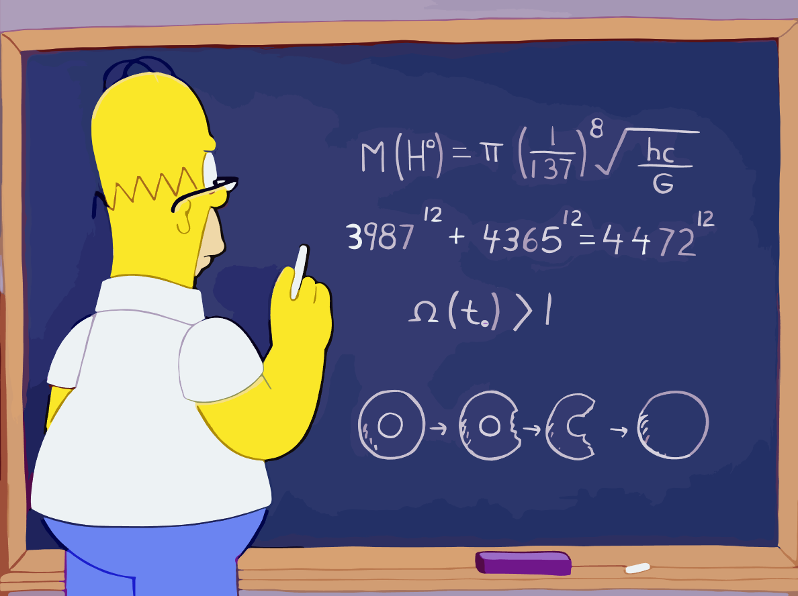

Вдохновленный работой Томаса Эдисона, Гомер становится подающим надежды изобретателем в 10-м сезоне шоу. В одной из вырезанных шуток Гомер усердно строчит что-то на доске, внизу которой изображено математическое уравнение. Более десяти лет спустя ученые обнаружили частицу бозона Хиггса (также известную как «частица Бога») и были поражены, обнаружив, что ее масса соответствует расчетам Гомера.
